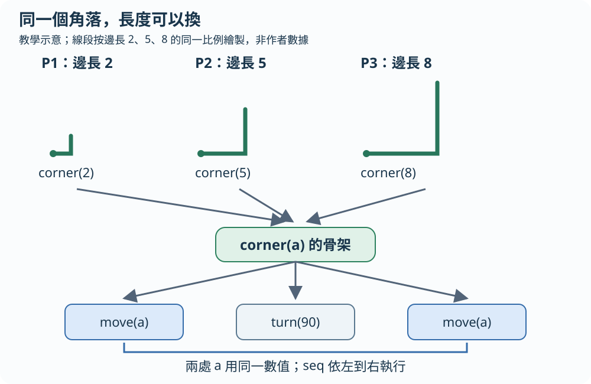
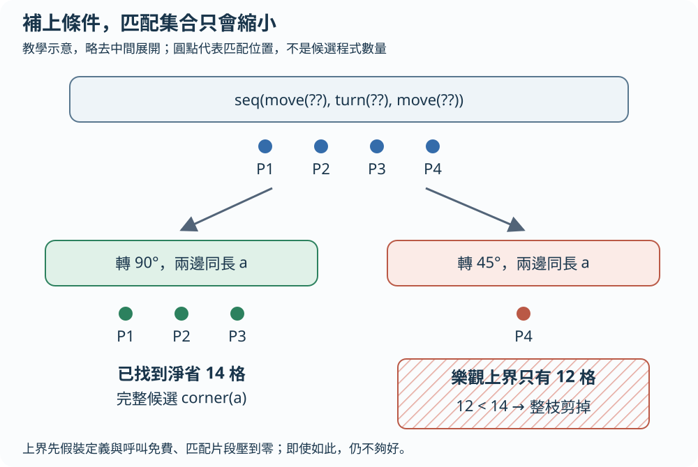
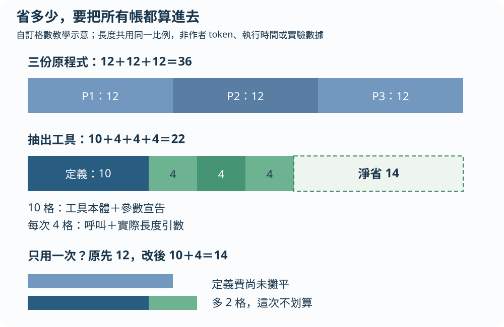

想像你整理食譜，發現三頁都在寫同一段「拌勻、加熱、再拌勻」，差別只有份量。你想把共同步驟另寫一張卡片，原頁面只填份量。Stitch 做的是類似的程式整理：從已經寫好的程式中，搜尋值得抽成工具的共同結構。這是生活比喻，不是論文實驗。
先做三個角落
以下是自編繪圖語言與數字，只是教學示意。move(a) 代表向前走 a 步並畫線，turn(90) 代表轉九十度，seq 表示按順序做。
前三段都畫直角，而且前後兩條邊一樣長；第四段轉的角度不同。把會變的長度留成參數 a，就能定義：
手算 corner(5)：a 取 5，第一個 move(a) 變成走 5 步，轉九十度，再走 5 步。把定義展開，就還原 P2。這裡的「抽象」就是保留共同骨架、把差異變成參數；兩處 a 必須使用同一個值，不能分別填 5 與 8。概念對照原文 §2、Fig. 2
P1 = seq(move(2), turn(90), move(2))
P2 = seq(move(5), turn(90), move(5))
P3 = seq(move(8), turn(90), move(8))
P4 = seq(move(2), turn(45), move(2))
corner(a) = seq(move(a), turn(90), move(a))
P1 → corner(2)
P2 → corner(5)
P3 → corner(8)
P4 保留原式三個直角，共用一個帶參數的骨架

放大閱讀圖解 ↗ · 窄螢幕可在圖內左右滑動。

圖解文字說明
- 固定結構
前進、轉九十度、再前進
- 可變部分
兩處邊長共用同一參數 a
- 替換後
corner(2)、corner(5)、corner(8)
怎麼找到工具？先留洞，再逐步補細節
「洞」是還沒決定內容的位置，以 ?? 表示。Stitch 從一個洞開始，逐步補成較具體的程式結構；這叫自頂向下搜尋。每補一步，都看現有程式還有哪裡符合這個模板。這些位置合在一起，就是匹配集合。原文 §3.2
在我們的例子，seq(move(??),turn(??),move(??)) 能對上四段程式。把角度填成 90，再要求兩個長度使用同一參數 a，就只剩 P1、P2、P3。填得越細，能匹配的位置只會減少或保持原樣，不會憑空多出新位置。第四段已經不合「轉九十度」，後面再補細節也不會把它救回來。原文 §2、§3.2 Lemma 2
這個觀察讓搜尋不用盲目試到底。若某條路線即使把所有能匹配的片段免費刪掉，都省不到目前最佳工具那麼多，就可以整條跳過。這叫分枝定界：一邊保留目前最好答案，一邊用「最樂觀也不可能更好」的界線刪掉候選。原文 §4.2
補得越細，匹配只會變少

放大閱讀圖解 ↗ · 窄螢幕可在圖內左右滑動。

圖解文字說明
- 較寬模板
角度與長度尚未固定，匹配四處
- 直角模板
固定九十度、兩邊同長，只匹配前三處
- 剪掉另一分支
轉四十五度僅匹配 P4；樂觀上界也不夠好
工具要付定義費，呼叫也不是免費
下面完全採用自訂格數，不是作者的 token 定義、實驗數字或執行時間。假設每段原程式花 12 格；新增 corner 定義花 10 格，包含本體與參數宣告；每次 corner(長度) 花 4 格，包含呼叫與實際引數。
所以出現重複不代表一定要抽工具。壓縮效用計算的是「原語料成本－改寫後語料成本－新定義成本」；呼叫與引數已包含在改寫後成本內，不能再當成零。論文也會計入同一參數多次出現、卻只需傳入一份引數的節省。原文 §4.1 Eq. 8–12
這些數字還能示範剪枝。假設已有淨省 14 格的 corner；搜尋「轉四十五度」的分支只匹配 P4，該位置原來花 12 格。即使極度樂觀地假設它壓到零、定義和呼叫都免費，最多也只省 12 格，小於 14，因此這條分支不用繼續。實際效用上界會依匹配子樹的成本相加，不是只數出現次數。原文 §4.2 Eq. 14
頻率本身也不夠。只抽出一個常見的 move，每次能省的結構可能很少；把整段 P1 原封不動取名，又只適合一種長度。corner(a) 位於兩端之間：保留前進、轉彎、再前進的結構，讓長度能變。演算法比較的是完整成本，而不是只找最長片段或最多次出現的字串。原文 §2、§4.1
在搜尋中，帶洞模板與完成工具也不能混為一談。洞只是暫時不指定的內容，可以在各個匹配位置填不同東西；正式參數 a 則指定了可變部分的使用規則，同一位置的兩個 a 必須相同。這個約束正是為什麼「前後各走不同長度」的程式不會匹配 corner(a)。原文 §3.1–3.2
只看前三段：原先 12＋12＋12＝36 格
抽成工具後：定義 10＋呼叫 4＋4＋4＝22 格
淨省：36－22＝14 格
把 P4 也算進來：原先 48 格，改寫後 22＋12＝34 格
只有一段使用時：10＋4＝14 格，反而比原來 12 格貴省下片段，還要扣掉新定義與呼叫

放大閱讀圖解 ↗ · 窄螢幕可在圖內左右滑動。

圖解文字說明
- 三段原程式
12＋12＋12＝36 格
- 定義與三次呼叫
10＋4＋4＋4＝22 格，淨省 14
- 只用一次
10＋4＝14 格，反而比原先 12 格多
30秒自測（自編教學例）
沿用自訂成本：工具定義 10 格、每次呼叫 4 格、原式 12 格。如果只用一次，你會收下這個工具嗎？
另一條搜尋分支的可靠收益上界是 12 格，目前冠軍淨省 14 格。還要繼續搜這一枝嗎？這些格數是自編教學假設，不是研究數據。
看答案與理由
不收。只用一次要花 10＋4＝14 格，比原式 12 格多；重複結構不代表值得新增工具。
可以剪掉這枝。可靠上界 12 小於冠軍 14，即使採最樂觀估計也無法勝過目前答案；這個判斷依賴上界可靠，不能拿一般猜測代替。
這個方法沒有自動看懂所有等價寫法
原生 Stitch 主要按程式語法結構匹配。它不會自動知道 2*x 與 x*2 可利用乘法交換律整理成同一形狀，更不能只因兩支程式在幾組輸入得到相同輸出，就視為同一工具。需要額外改寫規則，才能暴露這類共同結構。原文 §5
它也不是一次找到整個函式庫的全域最佳組合。一般流程是一輪選一個抽象、重寫語料，再跑下一輪；前一輪選擇會影響後面能看到什麼。提早停止時有目前最好候選可用，但不代表已證明它是最好的。真實碼庫的規模與結構，也超出本文實驗直接驗證的範圍。原文 §3.2、§8
技術細節：lambda、變數綁定與重疊位置
論文使用 lambda 演算表示程式；lambda 就是帶參數的函式表示。de Bruijn 索引用「距離第幾層函式」代替變數名字，避免搬動程式時把參數認錯。Stitch 的 LambdaUnify 會處理綁定關係，不能只做字串搜尋。洞與正式參數也有不同的合法性條件。原文 §3.1、附錄 B
兩個匹配位置可能重疊，改寫外層後，內層原來的匹配不一定還存在。論文以自底向上動態規劃，逐節點比較「在這裡改寫」與「保留這裡、改寫子節點」的收益，對給定抽象選擇最佳重寫位置。這個最優性與「找整個函式庫的最佳組合」是不同問題。原文 §4.4 Eq. 15
保證要連同條件一起讀
CTS 的可靠上界與嚴格支配剪枝，有論證說明如何保留最佳單一抽象。但 §4.3 的 argument capture 另有邊角條件：它把所有匹配位置都固定不變的某個引數內聯到抽象本體，少傳一個參數；如果引數含自由變數（依賴抽象外部綁定的變數），就不能直接這樣內聯。若該參數在本體中的使用次數高於改寫位置數，內聯可能略降效用。因此採用這個剪枝時，應說是在完成所有可用 argument capture 的限制下求最佳；不能無條件宣稱所有版本都找到無限制最優解。作者說初步實驗未見此例改變選出的抽象，但這不會消除理論限制。原文 §4.3、註 2
另外，結合演繹改寫的 Python 原型 pyStitch 使用近似效用，沒有最優性保證。它與原生 Stitch 的形式條件不能混稱。保證還取決於所設定的語言、成本及搜尋範圍；它不等於人類認為最易讀的工具，也不等於執行最快的程式。原文 §5、§8
實驗數字與回原文的閱讀順序
作者以 DreamCoder 公開軌跡中的五個領域比較庫學習與改寫階段，報告速度快 3–4 個數量級、記憶體少 2 個數量級，壓縮品質相當或更好。比較給 DreamCoder 八顆 CPU、Stitch 單執行緒；不要把加速率套到整個 DreamCoder 系統或所有碼庫。原文 §6.1、Fig. 7–9
較大語料實驗每個子領域有 250 支程式，以 80/20 訓練測試切分、重複 50 次。Table 2 的留出集壓縮比從 castles 的 2.55 倍到 nuts & bolts 的 11.57 倍；這是程式尺寸壓縮比，不是任務正確率或執行速度倍數。原文 §6.2、Table 2
先讀 §2 的 Fig. 2，看洞如何變成抽象及匹配集縮小；再讀 §4.1 Eq. 8 的成本定義與 §4.2 Eq. 14 的上界。想了解保證，連同 §4.3 的註 2 讀；想看實驗，讀 §6.1 的比較範圍與 Table 2。最後讀 §5、§8，辨認原生語法匹配、額外改寫與近似原型的差別。
原文與來源
此頁依下列固定快照編寫；教學例子與程式片段用來解釋方法，請回到原文確認研究設定與結果。